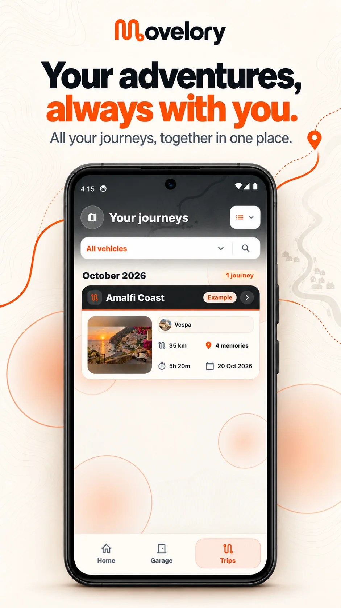
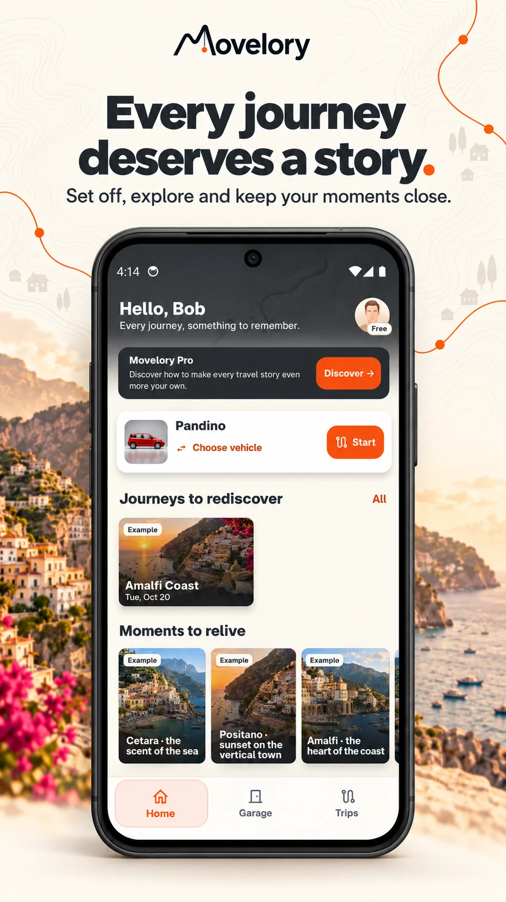
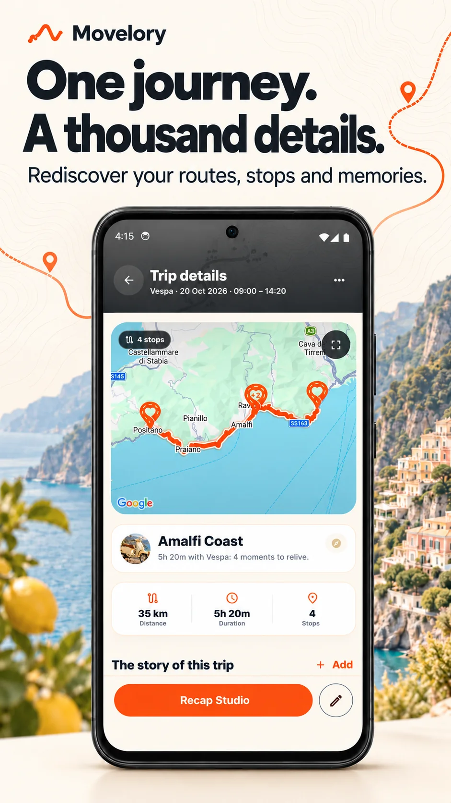
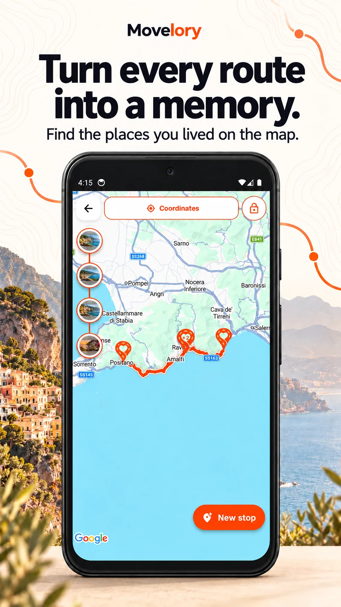
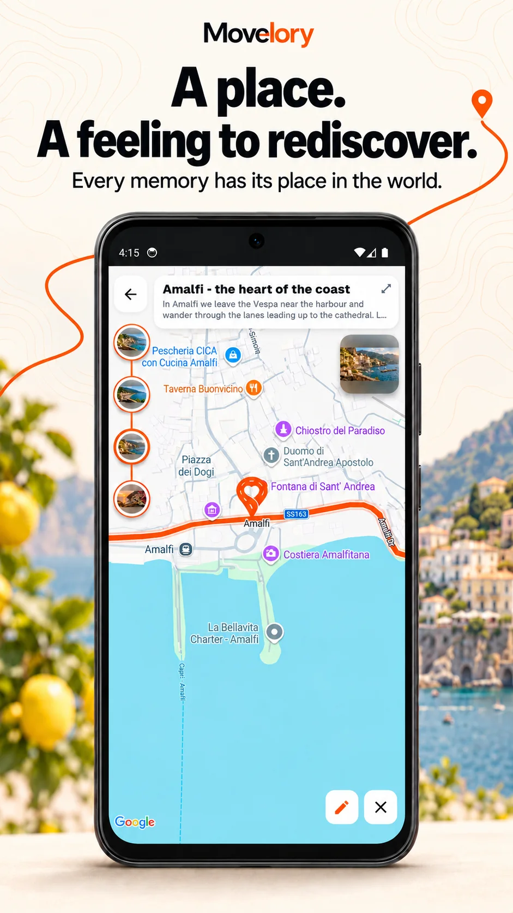
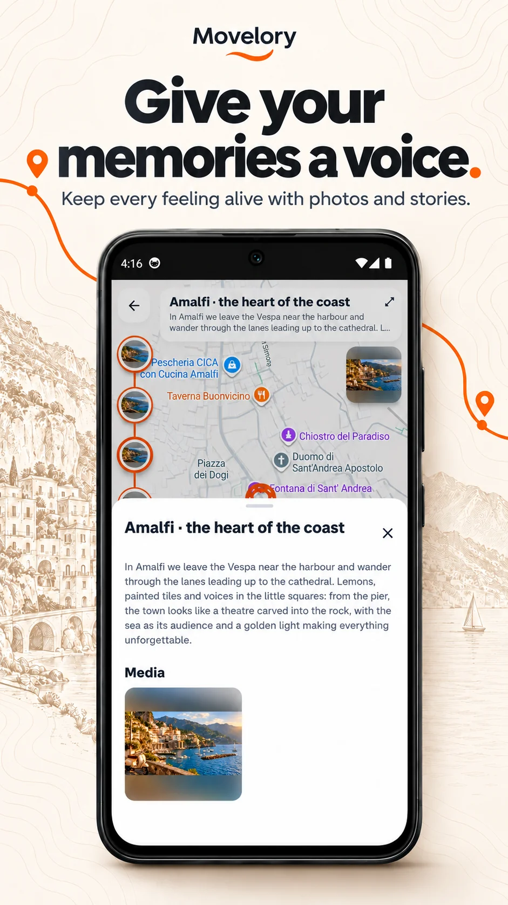
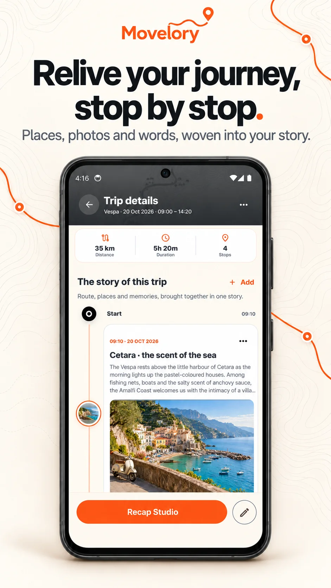
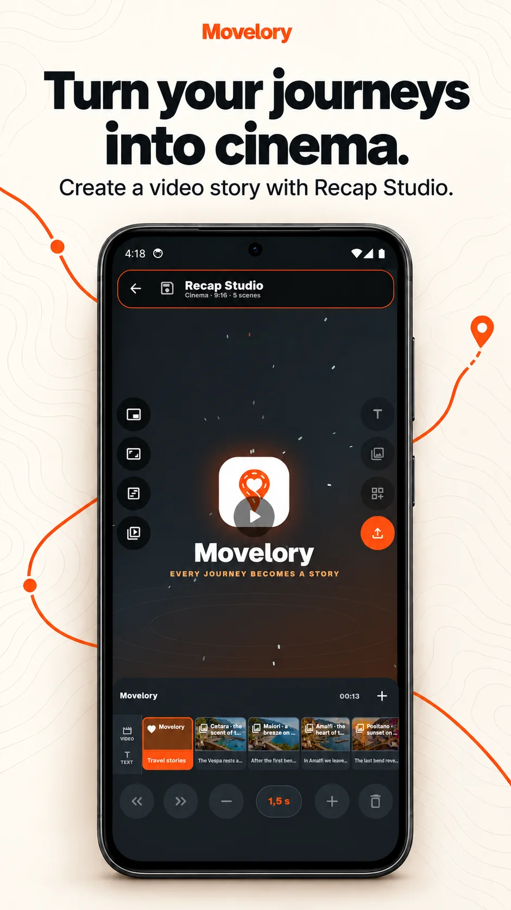

Your adventures, together.
Keep your journeys in one place and find the one you want to relive.
Your travel diary
The road you take. The places you stop. The moments you want to keep. Bring them together in Movelory, from your first departure to the story you revisit at home.

Movelory
Promotional images illustrating the app.

Keep your journeys in one place and find the one you want to relive.

Rediscover the route, stops and memories that make each journey yours.

Record a journey you start and revisit its route and the places you remember on the map.
Watch GPS recording
Bring photos, notes and places together, so a stop becomes something you can return to.

Keep the feeling of a place alive through photos and the words you choose for it.

Follow the places, photos and words that tell the story of your journey.

Create a video story from your journey with Recap Studio, then watch the demo to see it in action.
Watch Recap StudioLocal-first
Movelory keeps your journeys, GPS tracks and memories in your device’s private storage, without requiring a Movelory account. Read the privacy policy for details about maps, permissions and subscription services.